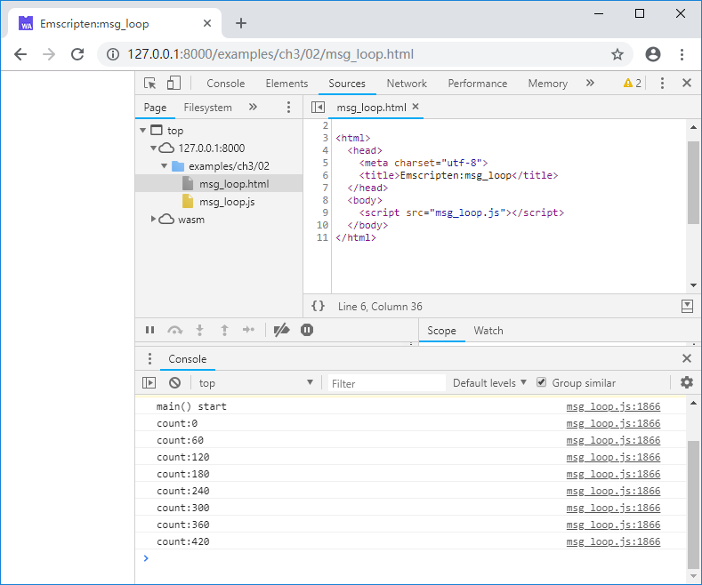
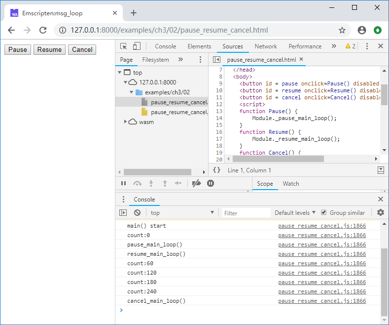

3.2 消息循环
除了一次性执行立即退出的程序外，大多数C/C++程序都存在类似下列伪代码的消息循环：
int main() {
while(1) {
msg_loop();
}
return 0;
}
但网页中的JavaScript脚本是单线程运行的，一个带有消息循环的C/C++程序如果不加处理，直接使用Emscripten编译后导入网页中运行，消息循环不退出，会阻塞页面程序的运行，导致DOM无法更新，整个页面失去响应。为此Emscripten提供了一组函数用于消息循环的模拟及调度执行。
3.2.1 emscripten_set_main_loop()
函数声明：
void emscripten_set_main_loop(em_callback_func func, int fps, int simulate_infinite_loop)
参数：
func：消息处理回调函数。fps：消息循环的执行帧率。如果该参数小等于0，则使用页面的requestAnimationFrame机制调用消息处理函数，该机制可以确保页面刷新率与显示器刷新率对齐，对于需要执行图形渲染任务的程序，使用该机制可以得到平滑的渲染速度。simulate_infinite_loop：是否模拟“无限循环”，用法后续介绍。
返回值：
- 无
先来看一个简单的例子：
//msg_loop.cc
#include <emscripten.h>
#include <stdio.h>
void msg_loop() {
static int count = 0;
if (count % 60 == 0) {
printf("count:%d\n", count);
}
count++;
}
int main() {
printf("main() start\n");
emscripten_set_main_loop(msg_loop, 0, 1);
printf("main() end\n");
return 0;
}
编译后导入页面，控制台输出如下：

注意控制台输出了“main() start”，但是没有输出“main() end”！这是因为调用emscripten_set_main_loop时，simulate_infinite_loop参数设为了1。
若调用emscripten_set_main_loop时，simulate_infinite_loop参数设为了0，控制台将输出如下：

无论simulate_infinite_loop参数是否为1，消息处理函数都会按照设定的帧率无限执行，区别仅在于，当其为1时：
emscripten_set_main_loop后续代码不执行。main()函数栈未销毁。
从直观上来说，此时，程序的行为最接近本节开头的伪代码。
info
simulate_infinite_loop参数为1时，emscripten_set_main_loop()函数会抛出SimulateInfiniteLoop异常，JavaScript中的胶水代码截获该异常终止后续代码执行。
3.2.2 消息循环的暂停、继续及终止
函数声明：
void emscripten_pause_main_loop(void)
void emscripten_resume_main_loop(void)
void emscripten_cancel_main_loop(void)
这三个函数分别用于暂停消息循环、继续消息循环、终止消息循环。例如：
//pause_resume_cancel.cc
#include <emscripten.h>
#include <stdio.h>
void msg_loop() {
static int count = 0;
if (count % 60 == 0) {
printf("count:%d\n", count);
}
count++;
}
EM_PORT_API(void) pause_main_loop() {
emscripten_pause_main_loop();
printf("pause_main_loop()\n");
}
EM_PORT_API(void) resume_main_loop() {
emscripten_resume_main_loop();
printf("resume_main_loop()\n");
}
EM_PORT_API(void) cancel_main_loop() {
emscripten_cancel_main_loop();
printf("cancel_main_loop()\n");
}
int main() {
printf("main() start\n");
emscripten_set_main_loop(msg_loop, 0, 1);
printf("main() end\n");
return 0;
}
页面部分：
<button id = pause onclick=Pause() disabled = true>Pause</button>
<button id = resume onclick=Resume() disabled = true>Resume</button>
<button id = cancel onclick=Cancel() disabled = true>Cancel</button>
<script>
function Pause() {
Module._pause_main_loop();
}
function Resume() {
Module._resume_main_loop();
}
function Cancel() {
Module._cancel_main_loop();
}
Module = {};
Module.onRuntimeInitialized = function() {
document.getElementById("pause").disabled = false;
document.getElementById("resume").disabled = false;
document.getElementById("cancel").disabled = false;
}
</script>
<script src="pause_resume_cancel.js"></script>
页面打开后，依次按下“Pause”、“Resume”、“Cancel”按钮，控制台输出如下：

tips 事实上使用Emscripten提供的消息循环函数对C/C++代码来说是侵入式的，因此笔者建议在工程应用中尽可能避免使用Emscripten消息循环，4.1节将对此进行更多讨论。